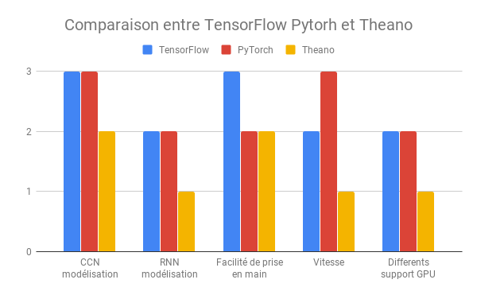
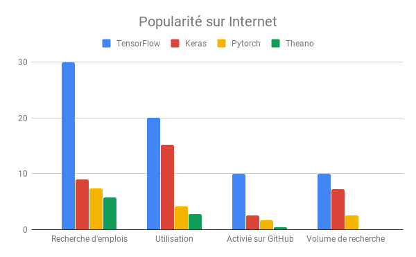
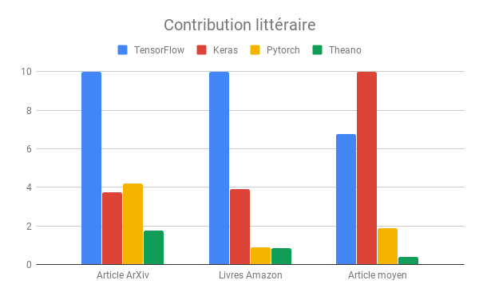
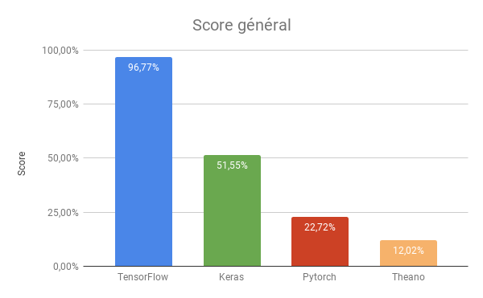

Avant de vous présenter les principales bibliothèques python permettant de faire du Deep-Learning, il faut savoir qu’une bibliothèque scientifique appelé NumPy est utilisé dans toutes les bibliothèques qui vont suivre. NumPy permet certes, d’avoir un affichage graphique (d’images par exemple), mais la principale utilité de NumPy pour le Deep-Learning réside dans la création et la manipulation de matrice à n dimension (noté numpy.array).
Description
Sûrement la bibliothèque python la plus aimé car elle est simple d’utilisation. C’est une très bonne base et c’est pour cette raison que d’autres bibliothèques tels que TensorFlow ou Theano sont basées sur Keras. Le problème est que sa simplicité rends plus difficile les modifications particulières et c’est une des raisons qui pousse les programmeurs utiliser des surcouches (TensorFlow et Theano). Les personnes l’utilisants commencent à migrer vers TensorFlow plutôt que sur Theano qui commence à vieillir et est moins complète.
Description
Une bibliothèque basé sur Keras qui ajoute quelques fonctionnalités. Elle a été créé il y a longtemps et c’est pour cette raisons que de moins en moins de personnes l’utilise. En effet, du fait de sa “vieillesse” son utilisation est moins trivial et moins de fonctionnalités sont implémenté par rapport à TensorFlow. Theano est voué à disparaître puisque étant de moins en moins utilisé, presque plus personne ne le met à jour ce qui a pour conséquence de ne plus attirer de personne.
Description
Bibliothèque la plus utilisé, elle se sert de Keras et en améliore les possibilitées de personnalisation et en simplifie le débogage. C’est en somme une surcouche de Keras qui a le mérite d’être simplifiée.TensorFlow est une bibliothèque open source développée par une équipe de Google (Google Brain Team). Elle n’est pas seulement utilisée par Google mais par beaucoup d’autres grandes entreprises (Twitter, Coca-Cola, Airbus…). Cette bibliothèque peut être utilisée pour plusieurs plateformes (ordinateurs, telephones, internet et cloud). Elle est principalement utilisé dans la reconnaissance vocale ou d’image et dans les applications textuelles, comme Google Translate par exemple. Elle a pour avantage d’être très utilisée ce qui fait qu’il y a beaucoup de documentation avec une grosse communauté de développeur. Elle est aussi très bonne pour les plus gros modèles. Point faible, elle est lente car il y a beaucoup de fonctionnalitées implémentées qui ne seront pas utilisé par tout le monde mais forcément importés.
Description
Bibliothèque très complète. Elle est complexe mais permet une grande flexibilité et une personnalisation approfondie une fois les compétences acquises. Elle a été développé par Facebook, c’est la version Python de Torch, elle est assez plébiscitée par les chercheurs du fait de son efficacité et de sa rapidité pour mettre en place des modèles d’apprentissages. Elle a pour avantage d’avoir des pièces modulaires prêtes à l’emplois, un processus de modélisation simple et son mode de définition se rapproche beaucoup de la programmation standard. Mais par contre il n’y a pas d’interface permettant de visualiser le processus ce qui peut compliquer la tâche des programmeurs.
Dans cette partie nous comparerons seulement les quatres bibliothèques présentées ci-dessus car ce sont les bibliothèques python les plus utilisées. Il faut tout de même garder en tête que TensorFlow est basé sur Keras donc ceux qui utilisent TensorFlow utilise aussi d’une certaine manière Keras.
La comparaison entre plusieurs bibliothèques peut se faire sous de nombreux aspects tels que la popularité, la complexité d’utilisation, la rapidité d’exécution, etc.
La performance est un point important en ce qui concerne les bibliothèque de Deep Learning. En effet plus elles sont performantes plus on peut les utiliser pour faire des choses différentes. Cette performance peut être décomposée en différent paramètres : la vitesse d’exécution, la facilité de prise en main les différents support ainsi que dans la modélisation. Dans le graphique ci-dessous on peut voir cette comparaison. Ce graphique est un graphique représentant les différents point fort des bibliothèque donc pour ce qui est des valeurs le 3 représente un score bon, un 2 représente un score moyen et un 1 représente un score faible.
Source : Ranking Popular Deep Learning Libraries for Data Science Posted by Michael Li
On remarque que TensorFlow et PyTorch se valent. Il sont tous les deux très bon pour la modélisation CCN mais TensorFlow est meilleur en ce qui concerne la prise en main tandis que PyTorch quand à lui est meilleur en vitesse. Ils restent tous les deux moyen dans les autres domaines. Pour Teano, il a de moins bon score il est moyen pour ce qui est de la modélisation CCN et en prise en main mais il a des lacunes dans les autres domaines.
L’article Deep Learning Framework Power Scores 2018 de Jeff Hale nous a permis d’avoir une comparaison de l’utilisation, de l’intérêt et de la popularité des différentes bibliothèques python.
La contribution est elle aussi crucial car c’est un facteur déterminant lorsque l’on choisit la bibliothèque que l’on souhaite utiliser. En effet il est plus rassurant de commencer un projet en utilisant une bibliothèque pour laquelle il y a beaucoup de ressources sur internet que ce soit des livre des tutoriels ou tout simplement un nombre conséquent d’utilisateurs. L’article Deep Learning Framework Power Scores 2018 de Jeff Hale nous a permis d’avoir une comparaison de l’utilisation, de l’intérêt et de la popularité des différentes bibliothèques python. Le graphique ci-dessus nous montre les pourcentage de contenue que l’on peut trouver de différentes formes comme la recherche d’emplois, l’utilisation les activitées GitHub et le volume de recherche sur Google.
Source : Towards Data Science
Le graphique suivant quand à lui reflète le contenu plus littéraire comme le nombre d’article ArXiv, le nombre de livre et le nombre d’article de moyenne taille.
Source : Towards Data Science
Jeff Hale a regroupé tous ces résultats et en a fait un seul et même graphique, qu’on peut retrouver ci-dessous, où il donne des scores à chaque bibliothèque. Sur ce graphique il est possible de voir que TensorFlow est largement plus utilisé que les autres. Cependant, il faut prendre en compte le fait que TensorFlow est en quelques sortes une amélioration / surcouche de Keras et que Keras éxiste depuis plus longtemps que Pytorch et TensorFlow. On peut par exemple proposé que les personnes utilisants Keras migre de plus en plus vers Tensorflow sachant que certaines personnes (du fait de sa simplicité) commencer directement le Deep Learning avec Tensorflow. PyTorch, d’un autre côté, est plus compliqué et est utilisé dans des cas un peu plus particulier car permet plus de personnalisation. Enfin, Theano est classé dernier mais cela semble logique du fait que c’est une des premières bibliothèques python permettant de faire du Deep Learning et qui est, par conséquent, moins performante et dispose moins de fonctionnalités. Theano est aussi plus difficile à prendre en main et par conséquent est nettement moins utilisé.
